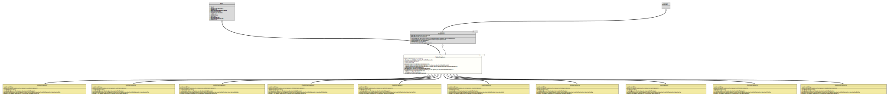

Module org.tquadrat.foundation.util
Class TimeDateStringConverter<T extends Temporal>
java.lang.Object
org.tquadrat.foundation.util.stringconverter.TimeDateStringConverter<T>
- Type Parameters:
T- The type that is handled by this class.
- All Implemented Interfaces:
Serializable,StringConverter<T>
- Direct Known Subclasses:
InstantStringConverter,LocalDateStringConverter,LocalDateTimeStringConverter,LocalTimeStringConverter,YearMonthStringConverter,YearStringConverter,ZonedDateTimeStringConverter
@ClassVersion(sourceVersion="$Id: TimeDateStringConverter.java 966 2022-01-04 22:28:49Z tquadrat $")
@API(status=STABLE,
since="0.0.6")
public abstract class TimeDateStringConverter<T extends Temporal>
extends Object
implements StringConverter<T>
The abstract base class for implementations of
The format for the date/time data can be modified by applying an instance of
StringConverter
for types that extend
Temporal.The format for the date/time data can be modified by applying an instance of
DateTimeFormatter
to the constructor
TimeDateStringConverter(Class,DateTimeFormatter)
that is used for parsing Strings to object instances and for converting
object instances to Strings.- Author:
- Thomas Thrien (thomas.thrien@tquadrat.org)
- Version:
- $Id: TimeDateStringConverter.java 966 2022-01-04 22:28:49Z tquadrat $
- Since:
- 0.0.6
- See Also:
- UML Diagram
-

UML Diagram for "org.tquadrat.foundation.util.stringconverter.TimeDateStringConverter"
{kind=link}
-
Field Summary
FieldsModifier and TypeFieldDescriptionprivate final Optional<DateTimeFormatter>The formatter that is used to format the date/time data.The subject class for this converter.static final StringThe error message for an invalid date/time on the command line: "\'%1$s\' cannot be parsed as a valid date/time".Fields inherited from interface org.tquadrat.foundation.lang.StringConverter
METHOD_NAME_GetSubjectClass, METHOD_NAME_Provider -
Constructor Summary
ConstructorsModifierConstructorDescriptionprotectedTimeDateStringConverter(Class<T> subjectClass) Creates a newTimeStringConverterinstance.protectedTimeDateStringConverter(Class<T> subjectClass, DateTimeFormatter formatter) Creates a newTimeStringConverterinstance that uses the given formatter for the conversion back and forth.privateTimeDateStringConverter(Class<T> subjectClass, Optional<DateTimeFormatter> formatter) Creates a newTimeStringConverterinstance. -
Method Summary
Modifier and TypeMethodDescriptionfinal TfromString(CharSequence source) final Collection<Class<T>>Provides the subject class for this converter.protected abstract TparseDateTime(CharSequence source, Optional<DateTimeFormatter> formatter) Parses the given String to an instance ofTemporal.private final voidLoads a previously serialised instance of this class from the given input stream.final Stringprivate final voidWrites a serialised instance of this class to the given output stream.
-
Field Details
-
MSG_InvalidDateTimeFormat
The error message for an invalid date/time on the command line: "\'%1$s\' cannot be parsed as a valid date/time".- See Also:
-
m_Formatter
The formatter that is used to format the date/time data. -
m_SubjectClass
The subject class for this converter.
-
-
Constructor Details
-
TimeDateStringConverter
Creates a newTimeStringConverterinstance.- Parameters:
subjectClass- The subject class.
-
TimeDateStringConverter
Creates a newTimeStringConverterinstance that uses the given formatter for the conversion back and forth.- Note:
-
- The formatter may not drop any part of the temporal data, otherwise may fail. This means that the formatter is only allowed to re-order the temporal fields.
- Parameters:
subjectClass- The subject class.formatter- The formatter for the date/time data.
-
TimeDateStringConverter
Creates a newTimeStringConverterinstance.- Parameters:
subjectClass- The subject class.formatter- The formatter for the date/time data.
-
-
Method Details
-
fromString
- Specified by:
fromStringin interfaceStringConverter<T extends Temporal>- Throws:
IllegalArgumentException
-
getSubjectClass
Provides the subject class for this converter.- Returns:
- The subject class.
-
parseDateTime
protected abstract T parseDateTime(CharSequence source, Optional<DateTimeFormatter> formatter) throws DateTimeParseException Parses the given String to an instance ofTemporal. The caller ensures thatsourceis notnull, not the empty String and does not contain only whitespace.- Parameters:
source- The String to parse.formatter- The formatter for parsing the String- Returns:
- The time/date value.
- Throws:
DateTimeParseException- The given value cannot be parsed to aTemporal.
-
readObject
Loads a previously serialised instance of this class from the given input stream.- Parameters:
in- The input stream.- Throws:
IOException- The de-serialisation failed.ClassNotFoundException- A class could not be found.
-
toString
- Specified by:
toStringin interfaceStringConverter<T extends Temporal>
-
writeObject
Writes a serialised instance of this class to the given output stream. This fails if aDateTimeFormatterinstance was assigned to this instance.- Parameters:
out- The output stream.- Throws:
IOException- ADateTimeFormatterwas assigned to this instance.
-